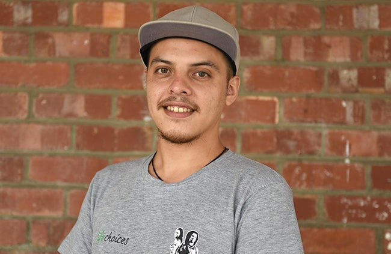

Matthew Allison
Aspiring Web-Developer
About
Bio
Hello! My name is Matthew Morne Allison and I was born on the 24th of July 2002, I am a kind and understanding person. My hobbies are swimming, hiking, drawing and gaming which is one of the biggest reasons why I enjoy technology. I have these traits because of the care and support from family and friends that I have surrounded myself with over my short but eventful life so far. I am a hard worker and because of the type of person I am, I have worked in a few places throughout my life. For example as a children's church leader where we taught younger age groups about God and the religion.
When my passion for coding started
My passion for the tech industry started when my father used to explain to me how he built a computer from scratch and how he wanted to learn "the language of a computer". I thought he was crazy at that age but after a few years and being a gamer I wanted to switch to pc so I decided to do some research and the things I discovered blew me away. I was going to attend The Animation School this year but because of the lack of funds, I was directed to this school, Life Choices Academy. Now I am still building my skills and hope that I can achieve my dreams one day.
My CVWork History
Funky Lemon (currently)
Funky Lemon is a casting agency for actors/extras in adverts or films, I still take part in these films/adverts when they require someone.
Hillsong Church Volunteer (kids program) (2017-2019)
I was a volunteer at Hillsong Church every Sunday for 2 years working with children and teaching them about the Bible.
Gottlieb Construction (part-time)
I was a casual worker at Gottlieb Construction the company my step-father owns and will probably work there when they need me.
Pick n Pay Plumstead (February 2021-June 2021)
I worked at Pick n Pay plumstead, once I started my lessons I decided to work weekends till ultimately leaving completely to focus on my studies
Skills and Education
Education
Matric (2016 - 2020)
Rosebank Progress College
Subjects
English
Afrikaans
Mathamatics
Economics
Business Studies
Life Orientation
Art
Character design/drawing(currently)
Udemy.
Subjects
Drawing fundamentals
Story telling
Pencil control
Dynamic poses
Style development
Drawing body forms
Drawing faces
Skills
My Projects
Testimonials
Adam Africa
Co-worker
-min.JPG)
Matthew is not only a great programmer but also a phenominal co-worker. He is extremely hard-working and has a great eye for programming and design. He would never do anything half-way, he will always go the extra mile.
Jason Wandrag
Lecturer
Matthew works extremely well both by himself and in groups. He is diligent in doing his own research, and tackles projects head on. He is always eager to improve himself and give his best to what he is doing.
Thapelo Tsotetsi
Lecturer

Matthew is a great student. He possesses a skill that allows him to learn new technologies quickly. He has great communication skills and works well withing a team having individual skill set. He will be a great addition to your team.
Gary Africa
Co-worker
-min.JPG)
Matthew is good partner to work with . He is always keen on learning new things when it comes to he's work. Matthew is also a good team player. Works hard and always delivers 5 star rating work. It's always and honor to work with him.
Zipho Sithandathu
Co-worker
-min.JPG)
Matthew is a very punctual guy, who is always available to help others when you run into a problem. He works well both alone and within a team